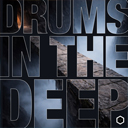
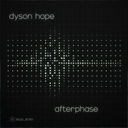
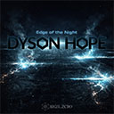
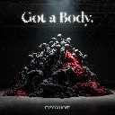
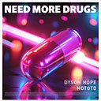

Founder and label boss of SIGIL.ZERO Records.
I make music. Then people dance.
I got my start as an FM radio DJ before moving on to the underground rave scene in Los Angeles in the late '90s, where I focused on writing and performing heavy, dancefloor-oriented music. Today, I live in the Austin area, producing genre-defying records that blend my prior influences.
Thanks for visiting my site and listening to my music. I appreciate you.

Drums in the Deep is a bass-heavy tech house groove made for dark rooms.

Afterphase is a deliberate, stripped-down progressive tech house dancefloor experience.

Edge of the Night is a high-octane progressive tech house anthem made for peak-time dance floors.

Got a Body is a dark, sweaty, hypnotic tech house banger built for moments when the lights drop, bodies get close, and the groove takes control.
Founded SIGIL.ZERO Records, an arcane-tinged electronic imprint built for industrial-strength, DJ-first releases with a ruthless focus on quality, longevity, and underground credibility.

Need More Drugs is a fun, funky two-track breakbeat collab with NOTOTO. The maxi-single includes three remixes (two house, one techno) from me and Brian G. Listen now on your favorite streaming platform.

My second album, Get Up and Go, is all house music! I still have a few albums' worth of back catalog material from the past 20 years to release. Check back here every six months or so for the next album!

I released my first album, At Your Own Risk, on Winter Solstice, 2022. Check it out on any of the streaming sources linked on this page.
I returned to the US, bouncing back and forth between Los Angeles and Pittsburgh until ultimately settling in Austin, Texas, thanks to a magical experience at a rooftop techno club at 5th and Congress.
I spent a few years outside the US, traveling from country to country, staying for a few months at a time to soak up the local dance music scene. I have fond memories of great music and fun people in London, Berlin, Barcelona, Istanbul, and elsewhere from these days. Seeing what moves the crowd in diverse regions was a revelation and inspiration.
I was thrilled to spin a slamming four-hour set at a house music club in Bulgaria. I was on holiday and wasn't expecting to get the booking, all I had was my laptop, so I had to visit a couple electronics stores and borrow a mixer to cobble together a DJ setup from what was available on short notice. It was a great show nonetheless, awesome vibes from the crowd.
There were heavy crackdowns in the rave scene at around this time so I started getting booked to play in nightclubs and afterhours clubs much more than raves. I started diversifying my DJ sets, adding techno, house, and breakbeats to the mix.
I pressed my first record (actually a dubplate). I was thrilled the first time I heard about another DJ playing my music at a show. Ironically, this was just about at the end of the era where drum & bass DJs would only consider records on vinyl and CDJs were considered uncool.
I moved from radio to live performance, spinning drum & bass in the underground LA rave scene. Around this time I also started writing drum & bass records, collaborating heavily with other artists like AnTi and CTRL-S in Los Angeles and Syphon in Orange County. I independently released two mix CDs of original drub & bass records. You can still find them on Russian pirate music websites today.
I spun records on two radio shows on WRCT 88.3 FM Pittsburgh, where I developed a love for techno and drum & bass.